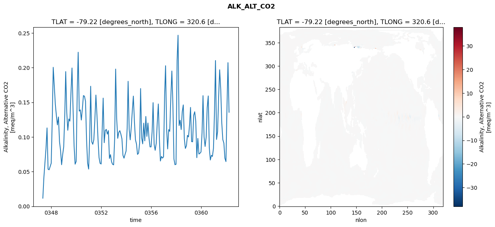
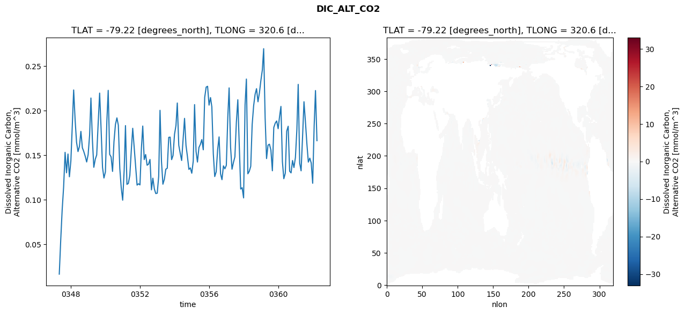
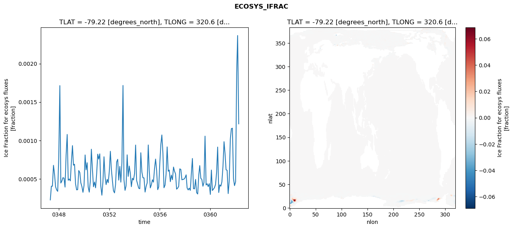

glb-dor_North_Atlantic_basin_013_1999-04-01_00053#
Simulation details#
Case: smyle.cdr-atlas-v0.glb-dor_North_Atlantic_basin_013_1999-04-01_00053.001
Basin: North_Atlantic_basin
Polygon: 13.0
Start date: 1999-04
Show code cell source Hide code cell source
import xarray as xr
import matplotlib.pyplot as plt
Show code cell source Hide code cell source
zarr_store = "/path/to/zarr/store"
# Parameters
zarr_store = "/global/cfs/projectdirs/m4746/Projects/Ocean-CDR-Atlas-v0/data/validation/smyle.cdr-atlas-v0.glb-dor_North_Atlantic_basin_013_1999-04-01_00053.001.validation.zarr"
Show code cell source Hide code cell source
%%time
ds_o = xr.open_zarr(zarr_store).compute()
ds_o
CPU times: user 667 ms, sys: 529 ms, total: 1.2 s
Wall time: 1.35 s
<xarray.Dataset> Size: 2MB
Dimensions: (nlat: 384, nlon: 320, time: 180)
Coordinates:
TLAT float64 8B -79.22
TLONG float64 8B 320.6
ULAT float64 8B -78.95
ULONG float64 8B 321.1
* time (time) object 1kB 0347-05-01 00:00:00 ... 0362-04-01 0...
z_t float32 4B 500.0
Dimensions without coordinates: nlat, nlon
Data variables:
ALK_ALT_CO2_diff (nlat, nlon) float32 492kB nan nan nan ... nan nan nan
ALK_ALT_CO2_rmse (time) float64 1kB 0.01167 0.04185 ... 0.2073 0.1356
DIC_ALT_CO2_diff (nlat, nlon) float32 492kB nan nan nan ... nan nan nan
DIC_ALT_CO2_rmse (time) float64 1kB 0.01627 0.05491 ... 0.2224 0.1661
ECOSYS_IFRAC_diff (nlat, nlon) float32 492kB nan nan nan ... nan nan nan
ECOSYS_IFRAC_rmse (time) float64 1kB 0.0002266 0.0004052 ... 0.001216
FG_ALT_CO2_diff (nlat, nlon) float32 492kB nan nan nan ... nan nan nan
FG_ALT_CO2_rmse (time) float64 1kB 4.149e-06 1.04e-05 ... 1.736e-05xarray.Dataset
- nlat: 384
- nlon: 320
- time: 180
- TLAT()float64-79.22
- long_name :
- array of t-grid latitudes
- units :
- degrees_north
array(-79.22052261)
- TLONG()float64320.6
- long_name :
- array of t-grid longitudes
- units :
- degrees_east
array(320.56250892)
- ULAT()float64-78.95
- long_name :
- array of u-grid latitudes
- units :
- degrees_north
array(-78.95289509)
- ULONG()float64321.1
- long_name :
- array of u-grid longitudes
- units :
- degrees_east
array(321.12500894)
- time(time)object0347-05-01 00:00:00 ... 0362-04-...
- bounds :
- time_bound
- long_name :
- time
array([cftime.DatetimeNoLeap(347, 5, 1, 0, 0, 0, 0, has_year_zero=True), cftime.DatetimeNoLeap(347, 6, 1, 0, 0, 0, 0, has_year_zero=True), cftime.DatetimeNoLeap(347, 7, 1, 0, 0, 0, 0, has_year_zero=True), cftime.DatetimeNoLeap(347, 8, 1, 0, 0, 0, 0, has_year_zero=True), cftime.DatetimeNoLeap(347, 9, 1, 0, 0, 0, 0, has_year_zero=True), cftime.DatetimeNoLeap(347, 10, 1, 0, 0, 0, 0, has_year_zero=True), cftime.DatetimeNoLeap(347, 11, 1, 0, 0, 0, 0, has_year_zero=True), cftime.DatetimeNoLeap(347, 12, 1, 0, 0, 0, 0, has_year_zero=True), cftime.DatetimeNoLeap(348, 1, 1, 0, 0, 0, 0, has_year_zero=True), cftime.DatetimeNoLeap(348, 2, 1, 0, 0, 0, 0, has_year_zero=True), cftime.DatetimeNoLeap(348, 3, 1, 0, 0, 0, 0, has_year_zero=True), cftime.DatetimeNoLeap(348, 4, 1, 0, 0, 0, 0, has_year_zero=True), cftime.DatetimeNoLeap(348, 5, 1, 0, 0, 0, 0, has_year_zero=True), cftime.DatetimeNoLeap(348, 6, 1, 0, 0, 0, 0, has_year_zero=True), cftime.DatetimeNoLeap(348, 7, 1, 0, 0, 0, 0, has_year_zero=True), cftime.DatetimeNoLeap(348, 8, 1, 0, 0, 0, 0, has_year_zero=True), cftime.DatetimeNoLeap(348, 9, 1, 0, 0, 0, 0, has_year_zero=True), cftime.DatetimeNoLeap(348, 10, 1, 0, 0, 0, 0, has_year_zero=True), cftime.DatetimeNoLeap(348, 11, 1, 0, 0, 0, 0, has_year_zero=True), cftime.DatetimeNoLeap(348, 12, 1, 0, 0, 0, 0, has_year_zero=True), cftime.DatetimeNoLeap(349, 1, 1, 0, 0, 0, 0, has_year_zero=True), cftime.DatetimeNoLeap(349, 2, 1, 0, 0, 0, 0, has_year_zero=True), cftime.DatetimeNoLeap(349, 3, 1, 0, 0, 0, 0, has_year_zero=True), cftime.DatetimeNoLeap(349, 4, 1, 0, 0, 0, 0, has_year_zero=True), cftime.DatetimeNoLeap(349, 5, 1, 0, 0, 0, 0, has_year_zero=True), cftime.DatetimeNoLeap(349, 6, 1, 0, 0, 0, 0, has_year_zero=True), cftime.DatetimeNoLeap(349, 7, 1, 0, 0, 0, 0, has_year_zero=True), cftime.DatetimeNoLeap(349, 8, 1, 0, 0, 0, 0, has_year_zero=True), cftime.DatetimeNoLeap(349, 9, 1, 0, 0, 0, 0, has_year_zero=True), cftime.DatetimeNoLeap(349, 10, 1, 0, 0, 0, 0, has_year_zero=True), cftime.DatetimeNoLeap(349, 11, 1, 0, 0, 0, 0, has_year_zero=True), cftime.DatetimeNoLeap(349, 12, 1, 0, 0, 0, 0, has_year_zero=True), cftime.DatetimeNoLeap(350, 1, 1, 0, 0, 0, 0, has_year_zero=True), cftime.DatetimeNoLeap(350, 2, 1, 0, 0, 0, 0, has_year_zero=True), cftime.DatetimeNoLeap(350, 3, 1, 0, 0, 0, 0, has_year_zero=True), cftime.DatetimeNoLeap(350, 4, 1, 0, 0, 0, 0, has_year_zero=True), cftime.DatetimeNoLeap(350, 5, 1, 0, 0, 0, 0, has_year_zero=True), cftime.DatetimeNoLeap(350, 6, 1, 0, 0, 0, 0, has_year_zero=True), cftime.DatetimeNoLeap(350, 7, 1, 0, 0, 0, 0, has_year_zero=True), cftime.DatetimeNoLeap(350, 8, 1, 0, 0, 0, 0, has_year_zero=True), cftime.DatetimeNoLeap(350, 9, 1, 0, 0, 0, 0, has_year_zero=True), cftime.DatetimeNoLeap(350, 10, 1, 0, 0, 0, 0, has_year_zero=True), cftime.DatetimeNoLeap(350, 11, 1, 0, 0, 0, 0, has_year_zero=True), cftime.DatetimeNoLeap(350, 12, 1, 0, 0, 0, 0, has_year_zero=True), cftime.DatetimeNoLeap(351, 1, 1, 0, 0, 0, 0, has_year_zero=True), cftime.DatetimeNoLeap(351, 2, 1, 0, 0, 0, 0, has_year_zero=True), cftime.DatetimeNoLeap(351, 3, 1, 0, 0, 0, 0, has_year_zero=True), cftime.DatetimeNoLeap(351, 4, 1, 0, 0, 0, 0, has_year_zero=True), cftime.DatetimeNoLeap(351, 5, 1, 0, 0, 0, 0, has_year_zero=True), cftime.DatetimeNoLeap(351, 6, 1, 0, 0, 0, 0, has_year_zero=True), cftime.DatetimeNoLeap(351, 7, 1, 0, 0, 0, 0, has_year_zero=True), cftime.DatetimeNoLeap(351, 8, 1, 0, 0, 0, 0, has_year_zero=True), cftime.DatetimeNoLeap(351, 9, 1, 0, 0, 0, 0, has_year_zero=True), cftime.DatetimeNoLeap(351, 10, 1, 0, 0, 0, 0, has_year_zero=True), cftime.DatetimeNoLeap(351, 11, 1, 0, 0, 0, 0, has_year_zero=True), cftime.DatetimeNoLeap(351, 12, 1, 0, 0, 0, 0, has_year_zero=True), cftime.DatetimeNoLeap(352, 1, 1, 0, 0, 0, 0, has_year_zero=True), cftime.DatetimeNoLeap(352, 2, 1, 0, 0, 0, 0, has_year_zero=True), cftime.DatetimeNoLeap(352, 3, 1, 0, 0, 0, 0, has_year_zero=True), cftime.DatetimeNoLeap(352, 4, 1, 0, 0, 0, 0, has_year_zero=True), cftime.DatetimeNoLeap(352, 5, 1, 0, 0, 0, 0, has_year_zero=True), cftime.DatetimeNoLeap(352, 6, 1, 0, 0, 0, 0, has_year_zero=True), cftime.DatetimeNoLeap(352, 7, 1, 0, 0, 0, 0, has_year_zero=True), cftime.DatetimeNoLeap(352, 8, 1, 0, 0, 0, 0, has_year_zero=True), cftime.DatetimeNoLeap(352, 9, 1, 0, 0, 0, 0, has_year_zero=True), cftime.DatetimeNoLeap(352, 10, 1, 0, 0, 0, 0, has_year_zero=True), cftime.DatetimeNoLeap(352, 11, 1, 0, 0, 0, 0, has_year_zero=True), cftime.DatetimeNoLeap(352, 12, 1, 0, 0, 0, 0, has_year_zero=True), cftime.DatetimeNoLeap(353, 1, 1, 0, 0, 0, 0, has_year_zero=True), cftime.DatetimeNoLeap(353, 2, 1, 0, 0, 0, 0, has_year_zero=True), cftime.DatetimeNoLeap(353, 3, 1, 0, 0, 0, 0, has_year_zero=True), cftime.DatetimeNoLeap(353, 4, 1, 0, 0, 0, 0, has_year_zero=True), cftime.DatetimeNoLeap(353, 5, 1, 0, 0, 0, 0, has_year_zero=True), cftime.DatetimeNoLeap(353, 6, 1, 0, 0, 0, 0, has_year_zero=True), cftime.DatetimeNoLeap(353, 7, 1, 0, 0, 0, 0, has_year_zero=True), cftime.DatetimeNoLeap(353, 8, 1, 0, 0, 0, 0, has_year_zero=True), cftime.DatetimeNoLeap(353, 9, 1, 0, 0, 0, 0, has_year_zero=True), cftime.DatetimeNoLeap(353, 10, 1, 0, 0, 0, 0, has_year_zero=True), cftime.DatetimeNoLeap(353, 11, 1, 0, 0, 0, 0, has_year_zero=True), cftime.DatetimeNoLeap(353, 12, 1, 0, 0, 0, 0, has_year_zero=True), cftime.DatetimeNoLeap(354, 1, 1, 0, 0, 0, 0, has_year_zero=True), cftime.DatetimeNoLeap(354, 2, 1, 0, 0, 0, 0, has_year_zero=True), cftime.DatetimeNoLeap(354, 3, 1, 0, 0, 0, 0, has_year_zero=True), cftime.DatetimeNoLeap(354, 4, 1, 0, 0, 0, 0, has_year_zero=True), cftime.DatetimeNoLeap(354, 5, 1, 0, 0, 0, 0, has_year_zero=True), cftime.DatetimeNoLeap(354, 6, 1, 0, 0, 0, 0, has_year_zero=True), cftime.DatetimeNoLeap(354, 7, 1, 0, 0, 0, 0, has_year_zero=True), cftime.DatetimeNoLeap(354, 8, 1, 0, 0, 0, 0, has_year_zero=True), cftime.DatetimeNoLeap(354, 9, 1, 0, 0, 0, 0, has_year_zero=True), cftime.DatetimeNoLeap(354, 10, 1, 0, 0, 0, 0, has_year_zero=True), cftime.DatetimeNoLeap(354, 11, 1, 0, 0, 0, 0, has_year_zero=True), cftime.DatetimeNoLeap(354, 12, 1, 0, 0, 0, 0, has_year_zero=True), cftime.DatetimeNoLeap(355, 1, 1, 0, 0, 0, 0, has_year_zero=True), cftime.DatetimeNoLeap(355, 2, 1, 0, 0, 0, 0, has_year_zero=True), cftime.DatetimeNoLeap(355, 3, 1, 0, 0, 0, 0, has_year_zero=True), cftime.DatetimeNoLeap(355, 4, 1, 0, 0, 0, 0, has_year_zero=True), cftime.DatetimeNoLeap(355, 5, 1, 0, 0, 0, 0, has_year_zero=True), cftime.DatetimeNoLeap(355, 6, 1, 0, 0, 0, 0, has_year_zero=True), cftime.DatetimeNoLeap(355, 7, 1, 0, 0, 0, 0, has_year_zero=True), cftime.DatetimeNoLeap(355, 8, 1, 0, 0, 0, 0, has_year_zero=True), cftime.DatetimeNoLeap(355, 9, 1, 0, 0, 0, 0, has_year_zero=True), cftime.DatetimeNoLeap(355, 10, 1, 0, 0, 0, 0, has_year_zero=True), cftime.DatetimeNoLeap(355, 11, 1, 0, 0, 0, 0, has_year_zero=True), cftime.DatetimeNoLeap(355, 12, 1, 0, 0, 0, 0, has_year_zero=True), cftime.DatetimeNoLeap(356, 1, 1, 0, 0, 0, 0, has_year_zero=True), cftime.DatetimeNoLeap(356, 2, 1, 0, 0, 0, 0, has_year_zero=True), cftime.DatetimeNoLeap(356, 3, 1, 0, 0, 0, 0, has_year_zero=True), cftime.DatetimeNoLeap(356, 4, 1, 0, 0, 0, 0, has_year_zero=True), cftime.DatetimeNoLeap(356, 5, 1, 0, 0, 0, 0, has_year_zero=True), cftime.DatetimeNoLeap(356, 6, 1, 0, 0, 0, 0, has_year_zero=True), cftime.DatetimeNoLeap(356, 7, 1, 0, 0, 0, 0, has_year_zero=True), cftime.DatetimeNoLeap(356, 8, 1, 0, 0, 0, 0, has_year_zero=True), cftime.DatetimeNoLeap(356, 9, 1, 0, 0, 0, 0, has_year_zero=True), cftime.DatetimeNoLeap(356, 10, 1, 0, 0, 0, 0, has_year_zero=True), cftime.DatetimeNoLeap(356, 11, 1, 0, 0, 0, 0, has_year_zero=True), cftime.DatetimeNoLeap(356, 12, 1, 0, 0, 0, 0, has_year_zero=True), cftime.DatetimeNoLeap(357, 1, 1, 0, 0, 0, 0, has_year_zero=True), cftime.DatetimeNoLeap(357, 2, 1, 0, 0, 0, 0, has_year_zero=True), cftime.DatetimeNoLeap(357, 3, 1, 0, 0, 0, 0, has_year_zero=True), cftime.DatetimeNoLeap(357, 4, 1, 0, 0, 0, 0, has_year_zero=True), cftime.DatetimeNoLeap(357, 5, 1, 0, 0, 0, 0, has_year_zero=True), cftime.DatetimeNoLeap(357, 6, 1, 0, 0, 0, 0, has_year_zero=True), cftime.DatetimeNoLeap(357, 7, 1, 0, 0, 0, 0, has_year_zero=True), cftime.DatetimeNoLeap(357, 8, 1, 0, 0, 0, 0, has_year_zero=True), cftime.DatetimeNoLeap(357, 9, 1, 0, 0, 0, 0, has_year_zero=True), cftime.DatetimeNoLeap(357, 10, 1, 0, 0, 0, 0, has_year_zero=True), cftime.DatetimeNoLeap(357, 11, 1, 0, 0, 0, 0, has_year_zero=True), cftime.DatetimeNoLeap(357, 12, 1, 0, 0, 0, 0, has_year_zero=True), cftime.DatetimeNoLeap(358, 1, 1, 0, 0, 0, 0, has_year_zero=True), cftime.DatetimeNoLeap(358, 2, 1, 0, 0, 0, 0, has_year_zero=True), cftime.DatetimeNoLeap(358, 3, 1, 0, 0, 0, 0, has_year_zero=True), cftime.DatetimeNoLeap(358, 4, 1, 0, 0, 0, 0, has_year_zero=True), cftime.DatetimeNoLeap(358, 5, 1, 0, 0, 0, 0, has_year_zero=True), cftime.DatetimeNoLeap(358, 6, 1, 0, 0, 0, 0, has_year_zero=True), cftime.DatetimeNoLeap(358, 7, 1, 0, 0, 0, 0, has_year_zero=True), cftime.DatetimeNoLeap(358, 8, 1, 0, 0, 0, 0, has_year_zero=True), cftime.DatetimeNoLeap(358, 9, 1, 0, 0, 0, 0, has_year_zero=True), cftime.DatetimeNoLeap(358, 10, 1, 0, 0, 0, 0, has_year_zero=True), cftime.DatetimeNoLeap(358, 11, 1, 0, 0, 0, 0, has_year_zero=True), cftime.DatetimeNoLeap(358, 12, 1, 0, 0, 0, 0, has_year_zero=True), cftime.DatetimeNoLeap(359, 1, 1, 0, 0, 0, 0, has_year_zero=True), cftime.DatetimeNoLeap(359, 2, 1, 0, 0, 0, 0, has_year_zero=True), cftime.DatetimeNoLeap(359, 3, 1, 0, 0, 0, 0, has_year_zero=True), cftime.DatetimeNoLeap(359, 4, 1, 0, 0, 0, 0, has_year_zero=True), cftime.DatetimeNoLeap(359, 5, 1, 0, 0, 0, 0, has_year_zero=True), cftime.DatetimeNoLeap(359, 6, 1, 0, 0, 0, 0, has_year_zero=True), cftime.DatetimeNoLeap(359, 7, 1, 0, 0, 0, 0, has_year_zero=True), cftime.DatetimeNoLeap(359, 8, 1, 0, 0, 0, 0, has_year_zero=True), cftime.DatetimeNoLeap(359, 9, 1, 0, 0, 0, 0, has_year_zero=True), cftime.DatetimeNoLeap(359, 10, 1, 0, 0, 0, 0, has_year_zero=True), cftime.DatetimeNoLeap(359, 11, 1, 0, 0, 0, 0, has_year_zero=True), cftime.DatetimeNoLeap(359, 12, 1, 0, 0, 0, 0, has_year_zero=True), cftime.DatetimeNoLeap(360, 1, 1, 0, 0, 0, 0, has_year_zero=True), cftime.DatetimeNoLeap(360, 2, 1, 0, 0, 0, 0, has_year_zero=True), cftime.DatetimeNoLeap(360, 3, 1, 0, 0, 0, 0, has_year_zero=True), cftime.DatetimeNoLeap(360, 4, 1, 0, 0, 0, 0, has_year_zero=True), cftime.DatetimeNoLeap(360, 5, 1, 0, 0, 0, 0, has_year_zero=True), cftime.DatetimeNoLeap(360, 6, 1, 0, 0, 0, 0, has_year_zero=True), cftime.DatetimeNoLeap(360, 7, 1, 0, 0, 0, 0, has_year_zero=True), cftime.DatetimeNoLeap(360, 8, 1, 0, 0, 0, 0, has_year_zero=True), cftime.DatetimeNoLeap(360, 9, 1, 0, 0, 0, 0, has_year_zero=True), cftime.DatetimeNoLeap(360, 10, 1, 0, 0, 0, 0, has_year_zero=True), cftime.DatetimeNoLeap(360, 11, 1, 0, 0, 0, 0, has_year_zero=True), cftime.DatetimeNoLeap(360, 12, 1, 0, 0, 0, 0, has_year_zero=True), cftime.DatetimeNoLeap(361, 1, 1, 0, 0, 0, 0, has_year_zero=True), cftime.DatetimeNoLeap(361, 2, 1, 0, 0, 0, 0, has_year_zero=True), cftime.DatetimeNoLeap(361, 3, 1, 0, 0, 0, 0, has_year_zero=True), cftime.DatetimeNoLeap(361, 4, 1, 0, 0, 0, 0, has_year_zero=True), cftime.DatetimeNoLeap(361, 5, 1, 0, 0, 0, 0, has_year_zero=True), cftime.DatetimeNoLeap(361, 6, 1, 0, 0, 0, 0, has_year_zero=True), cftime.DatetimeNoLeap(361, 7, 1, 0, 0, 0, 0, has_year_zero=True), cftime.DatetimeNoLeap(361, 8, 1, 0, 0, 0, 0, has_year_zero=True), cftime.DatetimeNoLeap(361, 9, 1, 0, 0, 0, 0, has_year_zero=True), cftime.DatetimeNoLeap(361, 10, 1, 0, 0, 0, 0, has_year_zero=True), cftime.DatetimeNoLeap(361, 11, 1, 0, 0, 0, 0, has_year_zero=True), cftime.DatetimeNoLeap(361, 12, 1, 0, 0, 0, 0, has_year_zero=True), cftime.DatetimeNoLeap(362, 1, 1, 0, 0, 0, 0, has_year_zero=True), cftime.DatetimeNoLeap(362, 2, 1, 0, 0, 0, 0, has_year_zero=True), cftime.DatetimeNoLeap(362, 3, 1, 0, 0, 0, 0, has_year_zero=True), cftime.DatetimeNoLeap(362, 4, 1, 0, 0, 0, 0, has_year_zero=True)], dtype=object) - z_t()float32500.0
- long_name :
- depth from surface to midpoint of layer
- positive :
- down
- units :
- centimeters
- valid_max :
- 537500.0
- valid_min :
- 500.0
array(500., dtype=float32)
- ALK_ALT_CO2_diff(nlat, nlon)float32nan nan nan nan ... nan nan nan nan
- cell_methods :
- time: mean
- grid_loc :
- 3111
- long_name :
- Alkalinity, Alternative CO2
- units :
- meq/m^3
array([[ nan, nan, nan, ..., nan, nan, nan], [ nan, nan, nan, ..., nan, nan, nan], [ 0.01269531, 0.00073242, -0.00439453, ..., nan, nan, nan], ..., [ nan, nan, nan, ..., nan, nan, nan], [ nan, nan, nan, ..., nan, nan, nan], [ nan, nan, nan, ..., nan, nan, nan]], dtype=float32) - ALK_ALT_CO2_rmse(time)float640.01167 0.04185 ... 0.2073 0.1356
- cell_methods :
- time: mean
- grid_loc :
- 3111
- long_name :
- Alkalinity, Alternative CO2
- units :
- meq/m^3
array([0.01167214, 0.04184527, 0.06237356, 0.08329251, 0.11306993, 0.05348443, 0.05266334, 0.05728832, 0.06214587, 0.12593507, 0.2005387 , 0.17340656, 0.14735898, 0.1308464 , 0.11744525, 0.12886 , 0.09308629, 0.08065705, 0.05996628, 0.07422112, 0.08564651, 0.13010234, 0.19437418, 0.13523043, 0.10965301, 0.126046 , 0.12286627, 0.16288063, 0.19954611, 0.14244624, 0.08708787, 0.06072374, 0.06474162, 0.16601762, 0.22229945, 0.13729232, 0.13910998, 0.12445769, 0.14078909, 0.15970675, 0.15879228, 0.15143022, 0.0953588 , 0.06209815, 0.05366531, 0.10232932, 0.17319397, 0.09302482, 0.08944337, 0.09603967, 0.12455758, 0.16050059, 0.13133221, 0.09723888, 0.07016189, 0.06198017, 0.06099318, 0.11109095, 0.15609533, 0.09174384, 0.10938407, 0.11096645, 0.10403636, 0.10921251, 0.06898809, 0.07454677, 0.0643673 , 0.06062972, 0.05980312, 0.09824513, 0.19800419, 0.12593368, 0.09805205, 0.10665537, 0.10913489, 0.10411573, 0.09731808, 0.07353251, 0.06940857, 0.07484033, 0.07984026, 0.11308447, 0.18035114, 0.11102868, 0.09587855, 0.11397146, 0.13760892, 0.15900342, 0.12241164, 0.09606932, 0.08972712, 0.07485469, 0.07678696, 0.09134183, 0.16989772, 0.0987099 , 0.09009365, 0.1199591 , 0.09440524, 0.12962567, 0.10082557, 0.12015087, 0.09889907, 0.08569766, 0.08570003, 0.10777163, 0.14955777, 0.08931323, 0.08075436, 0.09103025, 0.12062344, 0.14763468, 0.09715081, 0.06533927, 0.0719221 , 0.06945695, 0.07132593, 0.16006235, 0.20281026, 0.11134561, 0.08273402, 0.11067502, 0.10808726, 0.1562473 , 0.19520439, 0.1477168 , 0.06820737, 0.0599719 , 0.06061426, 0.2107212 , 0.24686706, 0.11642756, 0.124252 , 0.11066525, 0.13625958, 0.14627458, 0.09743996, 0.08344225, 0.0873194 , 0.1023599 , 0.09999821, 0.11796853, 0.14268062, 0.09329066, 0.09308309, 0.13120837, 0.13639993, 0.12278786, 0.07014584, 0.09792996, 0.07538487, 0.07648319, 0.07834542, 0.10609294, 0.15963262, 0.10000109, 0.08629507, 0.09955881, 0.14236086, 0.15922757, 0.08424733, 0.06678247, 0.07354954, 0.07193027, 0.08385042, 0.13887701, 0.21032396, 0.09639755, 0.10764745, 0.15816892, 0.19701738, 0.16878531, 0.11984601, 0.09625822, 0.09105877, 0.06923266, 0.06450494, 0.14576217, 0.20726591, 0.13563434]) - DIC_ALT_CO2_diff(nlat, nlon)float32nan nan nan nan ... nan nan nan nan
- cell_methods :
- time: mean
- grid_loc :
- 3111
- long_name :
- Dissolved Inorganic Carbon, Alternative CO2
- units :
- mmol/m^3
array([[ nan, nan, nan, ..., nan, nan, nan], [ nan, nan, nan, ..., nan, nan, nan], [-0.02978516, -0.01977539, -0.00805664, ..., nan, nan, nan], ..., [ nan, nan, nan, ..., nan, nan, nan], [ nan, nan, nan, ..., nan, nan, nan], [ nan, nan, nan, ..., nan, nan, nan]], dtype=float32) - DIC_ALT_CO2_rmse(time)float640.01627 0.05491 ... 0.2224 0.1661
- cell_methods :
- time: mean
- grid_loc :
- 3111
- long_name :
- Dissolved Inorganic Carbon, Alternative CO2
- units :
- mmol/m^3
array([0.01626648, 0.0549119 , 0.08813473, 0.11420669, 0.15298913, 0.13004102, 0.15112487, 0.12555606, 0.14334504, 0.18410109, 0.22301139, 0.18931279, 0.1643214 , 0.15384562, 0.1596003 , 0.17650611, 0.15815779, 0.15387009, 0.14850635, 0.14217522, 0.15047796, 0.17232441, 0.21396996, 0.16705699, 0.13620724, 0.14528758, 0.15004979, 0.18560139, 0.21950001, 0.18017885, 0.13602908, 0.12416728, 0.13100272, 0.1885477 , 0.22257568, 0.15074758, 0.14795063, 0.13157085, 0.1649738 , 0.18436004, 0.19169479, 0.18343454, 0.13495484, 0.11345866, 0.09929607, 0.13260236, 0.18301359, 0.11704157, 0.11811787, 0.12717999, 0.15433221, 0.18000196, 0.15857545, 0.1384869 , 0.11620875, 0.11773382, 0.11644144, 0.15792703, 0.18250958, 0.14489074, 0.15055729, 0.13853305, 0.13964485, 0.14500161, 0.11088716, 0.12400027, 0.1119472 , 0.10671279, 0.1071205 , 0.12614557, 0.20016297, 0.14269605, 0.11721867, 0.12285445, 0.13405542, 0.13515168, 0.16981045, 0.17008751, 0.1447936 , 0.14941564, 0.17317267, 0.18312524, 0.20836856, 0.1609936 , 0.15213717, 0.14385847, 0.16699117, 0.19112903, 0.16068166, 0.14840021, 0.13385338, 0.1355366 , 0.12952089, 0.1431942 , 0.20658883, 0.15412632, 0.14210234, 0.15844567, 0.16184796, 0.16733557, 0.15585212, 0.21464558, 0.22624793, 0.22712819, 0.20600778, 0.2144749 , 0.20401423, 0.15119706, 0.12580166, 0.13109623, 0.15575924, 0.17031196, 0.12889823, 0.12228645, 0.13782748, 0.13451871, 0.13837147, 0.19249399, 0.22534195, 0.15877476, 0.13405187, 0.14172657, 0.14793129, 0.186614 , 0.21201121, 0.16142609, 0.11177792, 0.11327565, 0.10186769, 0.20617942, 0.23526159, 0.12890273, 0.13166374, 0.13730234, 0.18402991, 0.2051988 , 0.21810402, 0.22448114, 0.20976153, 0.21959961, 0.23357243, 0.24544357, 0.26934126, 0.19192965, 0.14600352, 0.16106791, 0.16214325, 0.15554937, 0.1322923 , 0.18089938, 0.1858275 , 0.18821126, 0.17954413, 0.19369291, 0.20455697, 0.14256738, 0.12339158, 0.12953338, 0.17675511, 0.18226717, 0.13176945, 0.12992611, 0.14381675, 0.13592483, 0.14718661, 0.17887545, 0.22927949, 0.14086385, 0.13224465, 0.17033686, 0.20980314, 0.18695087, 0.16213726, 0.14203382, 0.14647703, 0.14098966, 0.11825908, 0.18290603, 0.22237454, 0.16608697]) - ECOSYS_IFRAC_diff(nlat, nlon)float32nan nan nan nan ... nan nan nan nan
- cell_methods :
- time: mean
- grid_loc :
- 2110
- long_name :
- Ice Fraction for ecosys fluxes
- units :
- fraction
array([[ nan, nan, nan, ..., nan, nan, nan], [ nan, nan, nan, ..., nan, nan, nan], [ 0.00106651, -0.00205457, -0.00082189, ..., nan, nan, nan], ..., [ nan, nan, nan, ..., nan, nan, nan], [ nan, nan, nan, ..., nan, nan, nan], [ nan, nan, nan, ..., nan, nan, nan]], dtype=float32) - ECOSYS_IFRAC_rmse(time)float640.0002266 0.0004052 ... 0.001216
- cell_methods :
- time: mean
- grid_loc :
- 2110
- long_name :
- Ice Fraction for ecosys fluxes
- units :
- fraction
array([0.00022656, 0.00040518, 0.0004049 , 0.00067706, 0.00055721, 0.00039707, 0.00035663, 0.00033811, 0.00079707, 0.00171396, 0.00044623, 0.00047296, 0.00051609, 0.00051034, 0.00039342, 0.00081294, 0.00107867, 0.00048229, 0.00049886, 0.00047465, 0.00072714, 0.00093317, 0.00067832, 0.0006912 , 0.0004341 , 0.00035735, 0.00036029, 0.00060905, 0.00058328, 0.00044811, 0.00039952, 0.00032539, 0.00041485, 0.00081181, 0.00061829, 0.00071068, 0.00039408, 0.0003278 , 0.00047003, 0.00088632, 0.00062178, 0.00039771, 0.00046 , 0.00038375, 0.00056866, 0.00082243, 0.0007579 , 0.00082624, 0.00040449, 0.00028793, 0.0004596 , 0.00078841, 0.00052431, 0.00042558, 0.00049495, 0.00045041, 0.00059752, 0.00085954, 0.00063012, 0.00047778, 0.00034641, 0.00031826, 0.0004286 , 0.00071997, 0.00075521, 0.000484 , 0.00066283, 0.00045776, 0.00071739, 0.00171605, 0.00048957, 0.00035106, 0.00040912, 0.00081334, 0.0005326 , 0.0006675 , 0.00057074, 0.00039899, 0.00050916, 0.0004858 , 0.00056831, 0.00094076, 0.00048165, 0.00043058, 0.00037953, 0.0003722 , 0.0008406 , 0.00058934, 0.00051428, 0.00051347, 0.00032877, 0.00040159, 0.00044909, 0.00094163, 0.00061489, 0.00038252, 0.00042184, 0.000489 , 0.00045743, 0.00063493, 0.00075828, 0.0006087 , 0.00035997, 0.00039736, 0.00070825, 0.0009539 , 0.00107197, 0.00083557, 0.00038494, 0.00041814, 0.00055845, 0.00091654, 0.00059889, 0.00061592, 0.00046413, 0.00054976, 0.00048937, 0.00065452, 0.00060109, 0.00056415, 0.00036679, 0.00038017, 0.00040357, 0.00063079, 0.00062332, 0.0004882 , 0.00049393, 0.00049694, 0.00051541, 0.00055305, 0.00038241, 0.00035632, 0.00038012, 0.00035059, 0.00056745, 0.00076595, 0.00037316, 0.00037048, 0.00049351, 0.00032057, 0.00030363, 0.0005504 , 0.00067289, 0.00050792, 0.00049331, 0.00040446, 0.00045347, 0.00105662, 0.00042078, 0.00043705, 0.00040021, 0.00043897, 0.00029782, 0.00061543, 0.00034907, 0.00036754, 0.00038656, 0.00042868, 0.00058387, 0.00091442, 0.00032302, 0.00042278, 0.00040521, 0.00046151, 0.00066035, 0.0009845 , 0.00083667, 0.00061825, 0.00061255, 0.00030905, 0.00047255, 0.00101233, 0.001154 , 0.00115968, 0.00050556, 0.00041247, 0.00046213, 0.00187948, 0.00236577, 0.0012163 ]) - FG_ALT_CO2_diff(nlat, nlon)float32nan nan nan nan ... nan nan nan nan
- cell_methods :
- time: mean
- grid_loc :
- 2110
- long_name :
- DIC Surface Gas Flux, Alternative CO2
- units :
- mmol/m^3 cm/s
array([[ nan, nan, nan, ..., nan, nan, nan], [ nan, nan, nan, ..., nan, nan, nan], [-6.060145e-07, 9.372161e-06, 4.170026e-06, ..., nan, nan, nan], ..., [ nan, nan, nan, ..., nan, nan, nan], [ nan, nan, nan, ..., nan, nan, nan], [ nan, nan, nan, ..., nan, nan, nan]], dtype=float32) - FG_ALT_CO2_rmse(time)float644.149e-06 1.04e-05 ... 1.736e-05
- cell_methods :
- time: mean
- grid_loc :
- 2110
- long_name :
- DIC Surface Gas Flux, Alternative CO2
- units :
- mmol/m^3 cm/s
array([4.14899797e-06, 1.04035296e-05, 1.17803541e-05, 1.40177605e-05, 1.87950184e-05, 2.47227098e-05, 2.51478885e-05, 1.75069131e-05, 2.10496015e-05, 2.36877960e-05, 1.91327484e-05, 1.37331380e-05, 1.24047531e-05, 1.28224657e-05, 1.35246262e-05, 1.42596451e-05, 2.11812739e-05, 2.17883385e-05, 2.43869969e-05, 2.21058358e-05, 2.20823083e-05, 2.13997893e-05, 1.75026107e-05, 1.54223183e-05, 1.76863942e-05, 1.65920262e-05, 1.48453055e-05, 2.13968093e-05, 1.62391252e-05, 1.93749086e-05, 1.87019306e-05, 1.74242146e-05, 1.75480900e-05, 1.96952250e-05, 1.65291925e-05, 1.34841169e-05, 1.38312946e-05, 1.48898528e-05, 2.89317941e-05, 1.90759838e-05, 2.14293435e-05, 1.87664996e-05, 1.57111935e-05, 1.53483632e-05, 1.47040914e-05, 1.58990948e-05, 1.33530813e-05, 1.22025708e-05, 1.55057263e-05, 1.91706803e-05, 2.30227816e-05, 1.92770317e-05, 1.46823567e-05, 1.85353973e-05, 2.00808007e-05, 1.95113662e-05, 1.85813803e-05, 1.98297223e-05, 2.82216382e-05, 4.25265300e-05, 3.27766694e-05, 1.67448020e-05, 1.28224463e-05, 1.28452930e-05, 1.38499334e-05, 1.54106653e-05, 1.58752753e-05, 1.42232390e-05, 1.75030903e-05, 1.99094941e-05, 1.49930144e-05, 1.32511736e-05, 1.45188955e-05, 1.28667680e-05, 1.24431822e-05, 1.39747341e-05, 2.19379044e-05, 2.87547274e-05, 3.12262685e-05, 2.06025572e-05, ... 2.69535734e-05, 3.17060608e-05, 3.64148683e-05, 3.24158238e-05, 3.32590674e-05, 2.68483662e-05, 2.21710094e-05, 2.13436504e-05, 1.42287315e-05, 1.18826509e-05, 1.25635721e-05, 1.47037241e-05, 1.54017909e-05, 1.29580574e-05, 1.80313196e-05, 1.75773860e-05, 2.05945281e-05, 1.97791447e-05, 1.96609590e-05, 1.67200872e-05, 1.23369390e-05, 1.31652497e-05, 1.16604757e-05, 1.80788724e-05, 1.46115946e-05, 1.57214435e-05, 1.24386833e-05, 1.20897152e-05, 1.28942411e-05, 1.44885789e-05, 1.25039879e-05, 1.01769397e-05, 1.01156022e-05, 1.41086228e-05, 1.68740394e-05, 2.05750132e-05, 2.21397194e-05, 2.90753275e-05, 3.04557519e-05, 2.94936120e-05, 3.53399865e-05, 3.30819086e-05, 3.51698141e-05, 2.31094107e-05, 1.75892871e-05, 1.66518783e-05, 1.59807562e-05, 1.51151453e-05, 1.49545532e-05, 2.38692985e-05, 2.31530115e-05, 3.11983926e-05, 2.73377157e-05, 2.32746240e-05, 2.06613695e-05, 1.74469087e-05, 1.68741892e-05, 1.33674729e-05, 1.33927059e-05, 1.48294584e-05, 1.53838390e-05, 1.65151006e-05, 2.23958267e-05, 2.25040350e-05, 2.32062030e-05, 2.19795013e-05, 1.85765572e-05, 1.52979732e-05, 1.92002641e-05, 1.70133164e-05, 1.77520582e-05, 1.87942859e-05, 1.81998937e-05, 2.41977217e-05, 1.69227022e-05, 2.06265922e-05, 1.81541092e-05, 2.11953510e-05, 2.41406837e-05, 1.73563593e-05])
- timePandasIndex
PandasIndex(CFTimeIndex([0347-05-01 00:00:00, 0347-06-01 00:00:00, 0347-07-01 00:00:00, 0347-08-01 00:00:00, 0347-09-01 00:00:00, 0347-10-01 00:00:00, 0347-11-01 00:00:00, 0347-12-01 00:00:00, 0348-01-01 00:00:00, 0348-02-01 00:00:00, ... 0361-07-01 00:00:00, 0361-08-01 00:00:00, 0361-09-01 00:00:00, 0361-10-01 00:00:00, 0361-11-01 00:00:00, 0361-12-01 00:00:00, 0362-01-01 00:00:00, 0362-02-01 00:00:00, 0362-03-01 00:00:00, 0362-04-01 00:00:00], dtype='object', length=180, calendar='noleap', freq='MS'))
Show code cell source Hide code cell source
variables = [v[:-5] for v in ds_o.variables if "_rmse" in v]
Show code cell source Hide code cell source
plt.rcParams.update({'figure.max_open_warning': 0})
for v in variables:
fig, axs = plt.subplots(1, 2, figsize=(15, 6))
ds_o[f"{v}_rmse"].plot(ax=axs[0])
ds_o[f"{v}_diff"].plot(ax=axs[1])
plt.suptitle(v, fontweight="bold")


